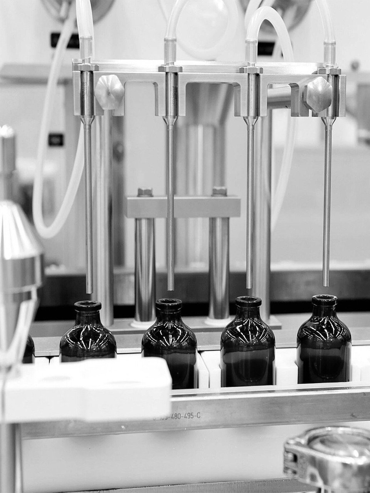
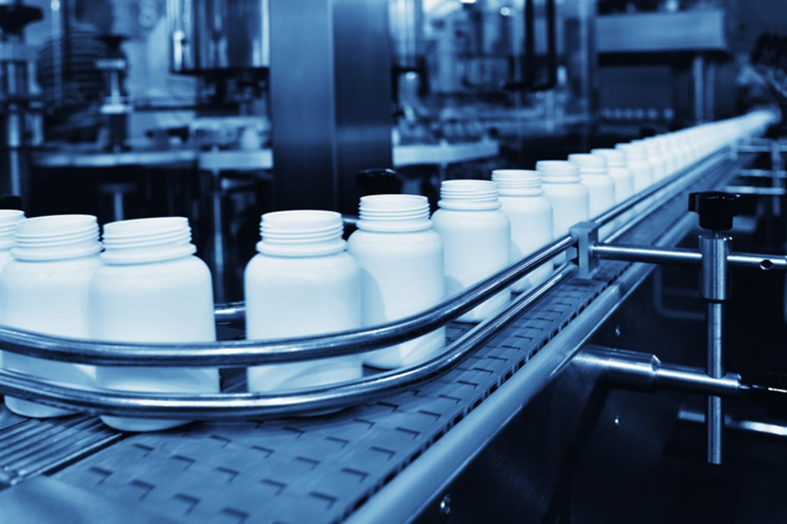
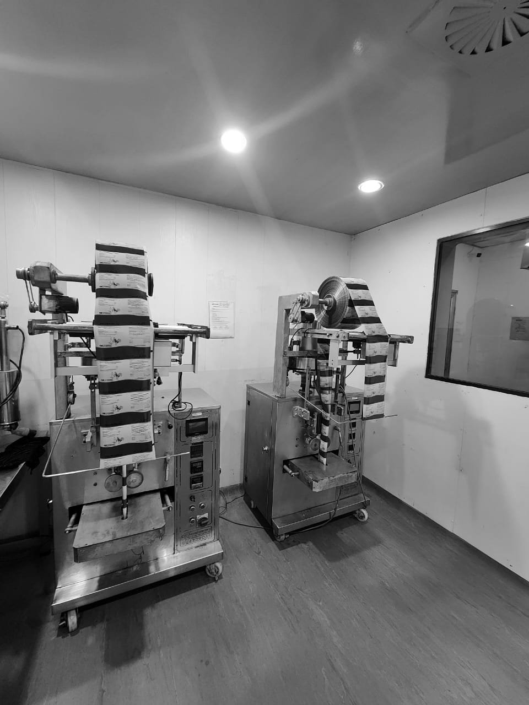
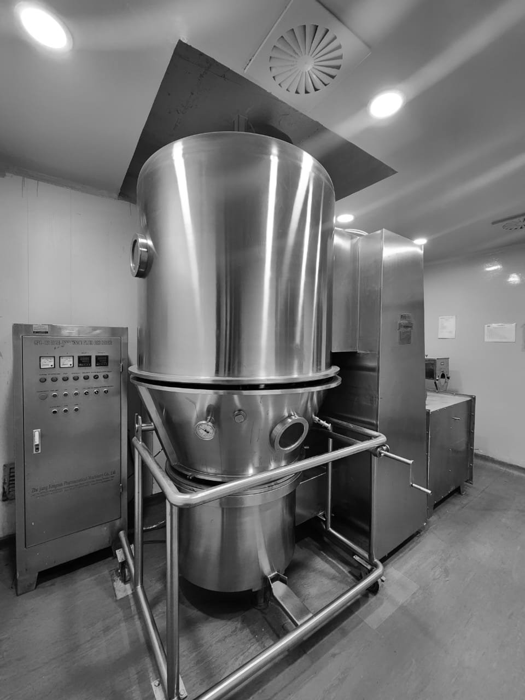
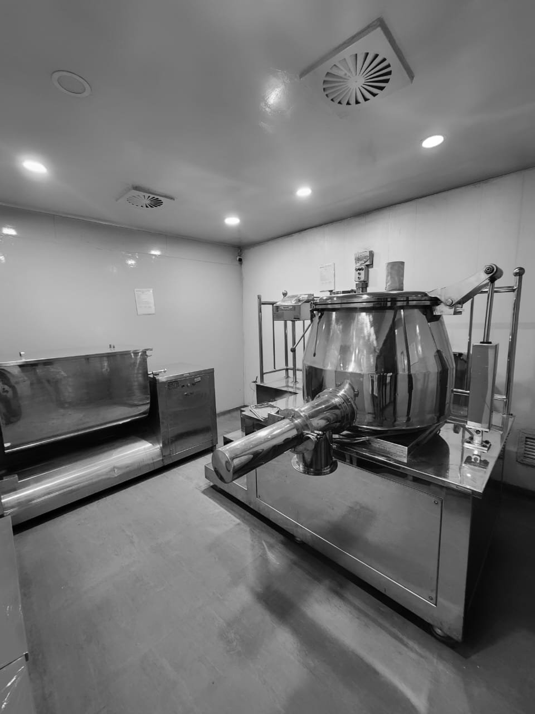
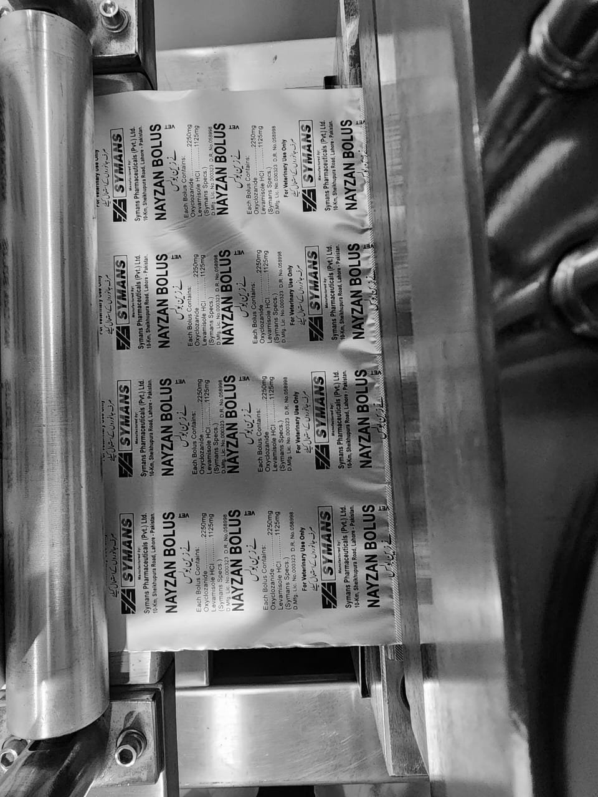
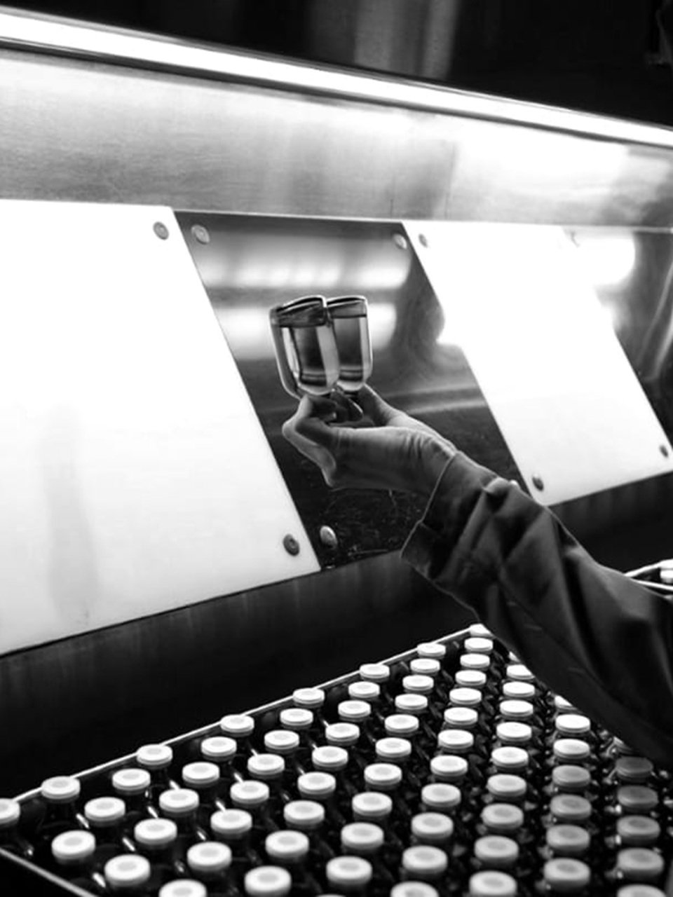
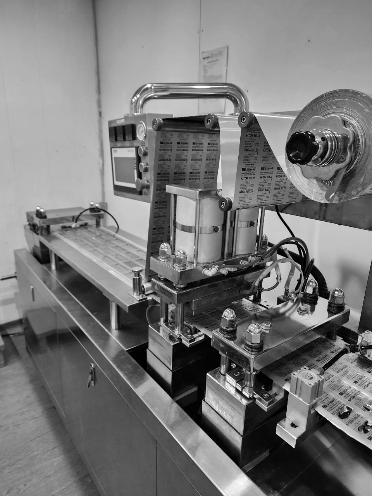
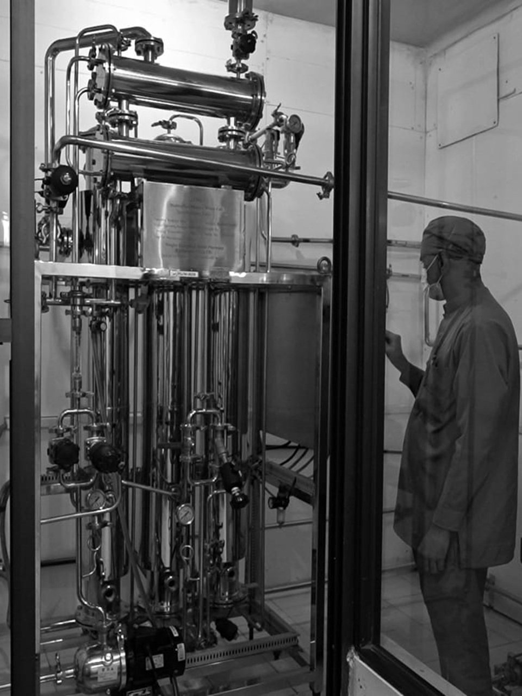

Dedicated production sections, rigorous quality control and continuous research & development — operated in compliance with current Good Manufacturing Practices (cGMP).
The Facility
Per the company's published profile: a large production unit was set up in 1987 sprawling over 6,000 square yards, equipped with high quality equipment and machinery including a state-of-the-art test laboratory. Due to constant expansion, some 9,000 square yards of land has been added — the factory is now housed in an area of 15,000 square yards at 10-km Lahore–Sheikhupura Road. The company's Drug Manufacturing Licence is No. 000323, as recorded in DRAP listings.
Quality Control Department
At Symans Pharma, our dedicated quality control department is committed to ensuring the safety, efficacy, and highest quality of our products. They rigorously monitor every stage of the manufacturing process, from sourcing raw materials to final product release, to guarantee compliance with regulatory standards and Good Manufacturing Practices. Our experienced team conducts comprehensive testing and analysis, verifying the identity, purity, potency, and stability of our products. With a strong focus on continuous improvement, we strive to deliver safe and effective medications that meet the unique needs of animals, providing peace of mind to both pet owners and veterinary professionals.


Research & Development Department
Symans Pharma's R&D department spearheads innovation in animal healthcare, collaborating with industry professionals, academic institutions, and research organizations. Through rigorous research and testing, we develop advanced pharmaceutical products that ensure safety, efficacy, and regulatory compliance. Continuously improving our solutions, we strive to transform animal health and well-being.
Production
All manufacturing sections are designed, validated, and operated in compliance with current Good Manufacturing Practices (cGMP), with appropriate segregation and process controls.
A dedicated production section at Symans, designed, validated and operated under cGMP with appropriate segregation and process controls.
A dedicated production section at Symans, designed, validated and operated under cGMP with appropriate segregation and process controls.
A dedicated production section at Symans, designed, validated and operated under cGMP with appropriate segregation and process controls.
A dedicated production section at Symans, designed, validated and operated under cGMP with appropriate segregation and process controls.
A dedicated production section at Symans, designed, validated and operated under cGMP with appropriate segregation and process controls.
A dedicated production section at Symans, designed, validated and operated under cGMP with appropriate segregation and process controls.
A dedicated production section at Symans, designed, validated and operated under cGMP with appropriate segregation and process controls.
Gallery
Photographs from the existing Symans website showing the company's manufacturing environment.







Partner With Symans
Whether you are a distributor, a veterinary professional, a business partner or an international export enquirer, our team is ready to assist you with product information, partnership opportunities and support.